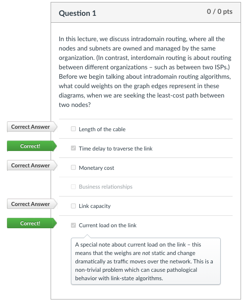
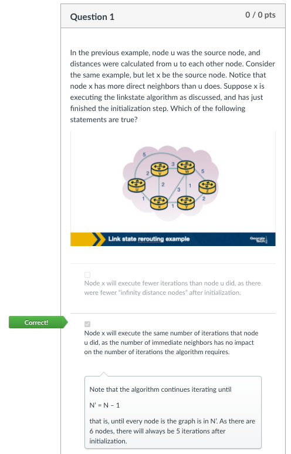

Intradomain routing
This lesson focuses on routing at the Network Layer within a single domain. It covers:
- Protocols that determine paths between sources and destinations within a single domain.
- Link-state and distance-vector algorithms.
- RIP
- OSPF
- Convergence
- Using routing protocols to steer traffic, avoiding congested links.
Link-state routing algorithm
The link-state routing algorithm essentially mimics Dijkstra's algorithm,
representing the network as a graph. u is the source node and v is every
other node in the network. The cost is represented by D(v), which is the
current least cost path from u to node v.
The initialization step of the algorithm determines all the currently known
least-cost paths from u to its adjacent neighbors. Unknown costs for nodes
not directly attached to u have a cost of infinity.
The iterative step of the algorithm follows a loop that is executed for
every destination node v in the network, continuously discovering nodes,
costs, and the overall cost for a path of u to v.
The algorithm exits by returning the shortest paths and their costs from the source node to every other node in the network.
The computational complexity of the link-state routing algorithm is O(n^2).
Distance-vector routing algorithm
The distance-vector routing algorithm is:
- iterative
- asynchronous
- distributed
- based on the Bellman Ford Algorithm
Each node maintains its own distance vector with the costs to reach every other node in the network. Occasionally, the routers will advertise its distance vector information to adjacent nodes. The adjacent nodes receive that information, update their own distance vectors, and exchange with other adjacent nodes.
Routing Information Protocol (RIP)
Based on the distance-vector routing algorithm, each node maintains a RIP table (Routing Table) which has one row for each subnet in the autonomous system. RIP version 2 allows subnet entries to be aggregated using route aggregation techniques.
In RIP, if a router does not hear from its neighbor at least every 180 seconds,
that neighbor is considered to be no longer reachable. The RIP table is modified
and changes are propagated throughout the network. Requests and responses are
sent over UDP, port 520, layered on top of IP. RIP is actually implemented at
the Application Layer. RIP challenges include:
- Updating routes
- Reducing convergence time
- Avoiding loops / counting to infinity
Open Shortest Path First (OSPF)
Based on the link-state routing algorithm, finds the best path between a source and destination router. Introduced as an advancement to RIP, uses flooding of link-state information and a Dijkstra least-cost pathing algorithm. Advances over RIP include:
- Authentication of messages exchanged between routers
- Options to use multiple same cost paths
- Support for router hierarchy within a domain
Hierarchy
OSPF autonomous systems can be configured into areas with their own link-state routing algorithms - border routers are responsible for routing packets outside of the area (the backbone area).
Operation
A graph of the autonomous system is constructed, then each node considers itself the root and computes the shortest path to all subnets, running Dijkstra's algorithm locally. Link costs are preconfigured by a network administrator. Whenever a link's state changes, the router broadcasts routing information to all other routers in the autonomous system.
Definitions
- Forwarding - a the Network Layer, transferring a packet from an incoming link to an outgoing link within a single router.
- Routing - how routers work together using routing protocols to determine the good paths over which the packets travel from the source to the destination node.
- intradomain routing algorithms - routing within the same adminisrative domain. Also known as Interior Gateway Protocols (IGPs).
- forwarding information base - database used when a data packat arrives at an interface card of the router, helps the router determine the next hop for the packet.
- hot potato routing - a technique / practice of choosing a path within the network by choosing the closes egress point based on intradomain path cost.
Quizzes
 